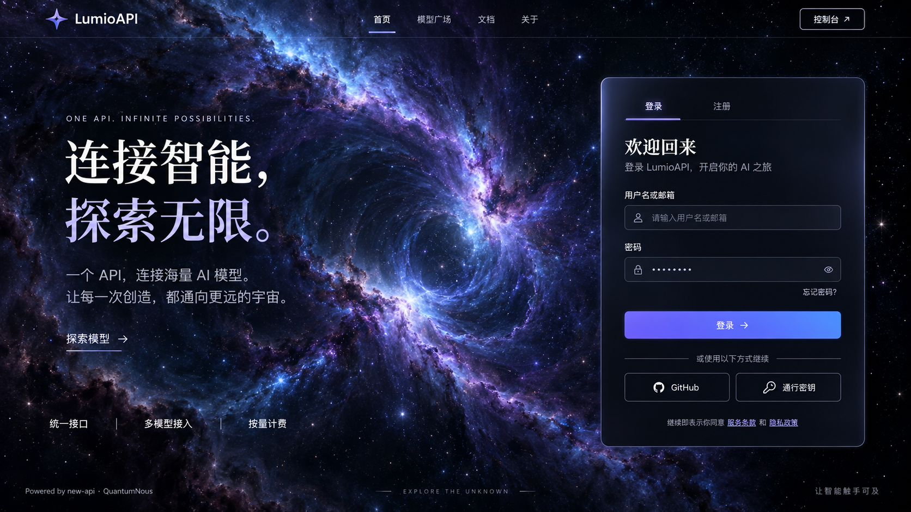

LumioAPI · 主页风格参考
AIGC 静态参考稿 · 图片中的登录 / 注册区域仅为视觉设计

A · 紫蓝星云 — 无尽的深空
动效设想（尚未实现）：星云缓慢翻涌、远近星点视差漂移，右侧玻璃面板映出流动的紫蓝微光。
1672 × 941 · 点击图片可放大查看
AIGC 静态参考稿 · 图片中的登录 / 注册区域仅为视觉设计

动效设想（尚未实现）：星云缓慢翻涌、远近星点视差漂移，右侧玻璃面板映出流动的紫蓝微光。
1672 × 941 · 点击图片可放大查看